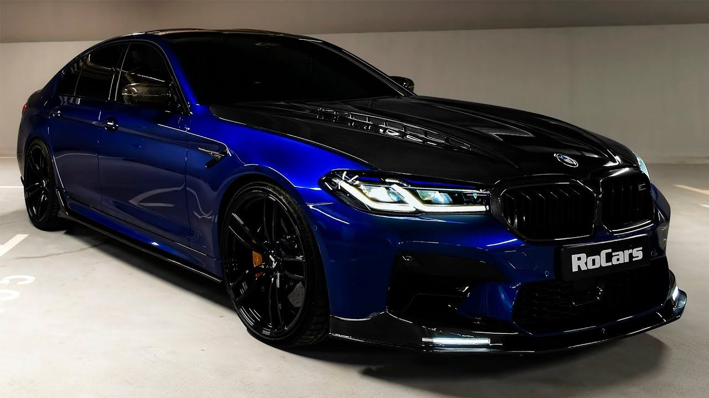
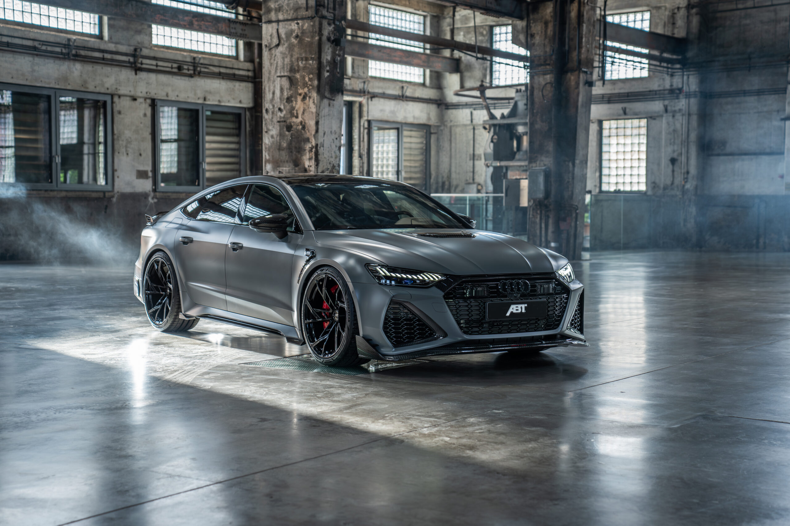
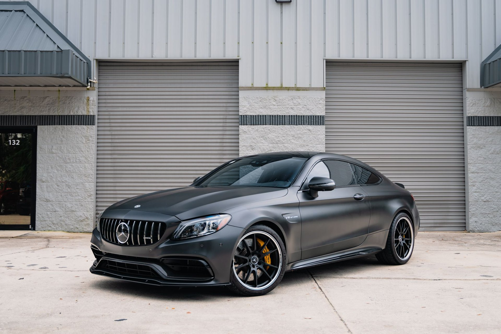

J'ai été élevé dans l'univers captivant de l'automobile, immergé dans le tourbillon de l'art mécanique, de l'excitation à quatre roues et du ronronnement envoûtant des moteurs. Que ce soit la puissance fulgurante en ligne droite, les performances enivrantes en virage, ou simplement l'esthétique saisissante d'une carrosserie bien pensée, chaque détail éveille en moi une émotion et une excitation uniques. Prêt à échanger sur les chevaux-vapeur, à comparer des modèles ou à discuter des toutes dernières avancées technologiques dans le monde automobile ? Considérez-moi comme votre référence incontournable dans ce domaine passionnant.
Le Panthéon Automobile
Explorez avec moi le sommet de mes rêves automobiles ! Découvrez sans plus attendre le top 4 de mes "dream cars", ces véhicules qui ont conquis mon imagination et symbolisent la fusion parfaite entre la performance et l'élégance. Préparez-vous à plonger dans un univers où chaque moteur ronronne avec passion et chaque ligne de carrosserie raconte une histoire unique. Embarquez pour ce périple au cœur de mes aspirations automobiles !
TOP 1: BMW M5 by Asco Tuning : chef d'oeuvre
Au sommet de mes aspirations automobile se dresse la majestueuse BMW M5 by Asco Tuning, une véritable incarnation de la performance ultime et de l'élégance mécanique.La M5 incarne l'essence de la sportivité sophistiquée, avec son design épuré qui fusionne harmonieusement avec des lignes agressives. Cependant, ce qui fait battre mon cœur à chaque pensée de cette machine est son moteur V8 suralimenté, une puissance débridée qui délivre des performances hors du commun.Imaginer le grondement de ce moteur, l'accélération sans effort propulsant la M5 sur l'asphalte, c'est rêver éveillé. Asco Tuning, réputé pour ses transformations extraordinaires, a façonné cette M5 en une œuvre d'art roulante. Avec une ingéniosité technique sans égale et une attention méticuleuse aux détails, chaque aspect de la M5 a été amélioré pour atteindre un niveau de perfection sur mesure. Elle n'est pas simplement une voiture, mais une œuvre d'art mécanique qui incite à l'admiration. Elle symbolise l'alliance parfaite entre la puissance brute et l'élégance sophistiquée, faisant d'elle la véritable reine de mon garage de rêve.

Figure 1 : Photo d'une M5 by Asco Tuning
TOP 2: Audi RS7 ABT : L'Impératrice du Biturbo
La RS7, deuxième sur le podium,Avec sa silhouette élégante de berline sportive, la RS7 mêle avec brio le luxe à la performance. Sous son capot, le V8 biturbo éveille des sensations à couper le souffle, propulsant la voiture avec une puissance qui semble inépuisable.Les touches personnalisées d'ABT, qu'il s'agisse des jantes imposantes, des échappements au son envoûtant, ou des ajustements intérieurs soignés, transforment l'habitacle en un cocon luxueux, où chaque détail est pensé pour l'enthousiaste exigeant. Cette voiture allie la grâce à la brutalité, l'efficacité à la passion, et elle est prête à régner en maître sur chaque kilomètre de route.Chaque instant passé derrière le volant de la RS7 est comme une audience avec une souveraine mécanique, une expérience qui fait de chaque trajet un voyage royal. Avec son design royal et sa puissance digne d'une impératrice, la RS7 se distingue parmi les véhicules de luxe, et c'est pourquoi elle occupe une place spéciale dans mon panthéon automobile.

Figure 2 : Photo d'une RS7 ABT
TOP 3: Mercedes-AMG C63 S Coupé : La Fusion Exaltante
À la troisième place trône la redoutable Mercedes-AMG C63 S Coupé, une véritable furie élégante au cœur battant.Surnommée "La Furie Élégante", la C63 S Coupé marie avec brio l'élégance d'un coupé de luxe à la puissance dévastatrice d'une véritable AMG. Son V8 biturbo rugit avec une ferveur déchaînée, propulsant la voiture avec une agilité fulgurante.Chaque courbe de sa carrosserie est une œuvre d'art dynamique, incarnant la passion et l'innovation caractéristiques de la marque. À l'intérieur, un cockpit raffiné offre une expérience de conduite exceptionnelle, où chaque trajet se transforme en une danse harmonieuse entre le conducteur et la machine.Que ce soit sur l'autoroute ou sur la piste, la C63 S Coupé se révèle être une compagne indomptable. Cette voiture incarne la fusion parfaite entre le luxe et la performance brute, faisant d'elle une favorite incontestée dans mon garage de rêve. Avec sa présence imposante et son rugissement déterminé, "La Furie Élégante" est bien plus qu'une voiture, c'est une déclaration audacieuse de passion automobile.

Figure 3 : Photo d'une Mercedes C63S
TOP 4: X6M Compétition - La Bête Élégante
À la quatrième place, trône le monstre élégant de l'aventure : la BMW X6M Compétition, une fusion audacieuse entre le luxueux SUV et la puissance sans compromis.Avec son allure imposante et sa silhouette athlétique, la X6M Compétition se distingue comme un monstre élégant. Surnommée "Le Monstre Élégant de l'Aventure", cette SUV haute performance cache sous son capot un moteur suralimenté qui délivre une puissance électrisante, faisant de chaque accélération une expérience palpitante.L'intérieur raffiné, mariant le confort à des touches sportives, crée un espace où le luxe rencontre la sportivité. Que ce soit sur les routes sinueuses ou sur les autoroutes, la X6M Compétition offre une conduite qui mélange la sophistication à l'adrénaline.Avec son mélange unique de design audacieux, de performances sauvages et de confort raffiné, la X6M Compétition trouve sa place de choix parmi mes préférences automobiles. C'est bien plus qu'un SUV - c'est une invitation à l'aventure, et "Le Monstre Élégant de l'Aventure" est prêt à conquérir chaque coin de la route..
Figure 4 : Photo d'une X6M competition
Conclusion
La Route des Rêves
En conclusion, mes rêves automobiles sont un panorama de puissance, d'élégance et d'émotion. De la BMW M5 personnalisée par Asco Tuning à l'Audi RS7 ABT, chaque voiture est bien plus qu'un simple moyen de transport. Elles incarnent des expériences mécaniques éveillées, des œuvres d'art roulantes qui font vibrer mon cœur à chaque rugissement de moteur. Ces bolides ne sont pas seulement des machines, mais des symboles de passion, de technologie avancée et de rêves de conduite sans limites. Chacune d'entre elles trouve sa place dans un garage de rêve, formant un ensemble éclectique et puissant qui transcende le simple concept de véhicule pour devenir une véritable expression de ma passion automobile.